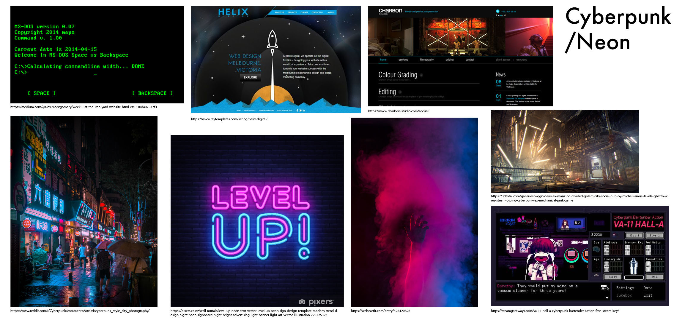

A retired mechanical fitter who's spending the rest of his years looking for new avenues to experiment and play with.
Goals:
To find something that'll hook him and allow him to focus on that task. He'll often jump between newer trends but as they are only surface-level distractions he'll quite easily get bored of it and jump to the next one.
Tech & skills:
Basic understanding of computers but is a lot more comfortable with cars and hardware rather than software.
User journey
Step 1:
As he was surfing the web for current tech news and find the new trend to latch onto, he stumbled upon a catchy title about the future of robotics which caught his eye from there he read through the description. Intrigued, he clicks on it to learn more. Creating a punchy title and well thought out SEO will aid in improving traffic and allow more hits to the site.
Step 2:
Finding the article quite interesting he clicks the "robotics" tab and attempts to find more articles of a similar context. His curiosity continues to surface. Including multiple hashtags which will link towards articles of a similar context will allow users to find things tailored towards their interests.
Step 3:
Seeing at the top of the page he finds a subscribe button which he clicks in efforts of wanting the latest news regarding robotics which opens a pop up which asks him to input his email or if he'll like to have desktop notifications. Providing features that'll allow the user to come back with ease and keep up to date will keep them coming back with a steady flow.
Step 4:
Feeling satisfied with his experience on the website he checks the homepage for other articles and adds it to his bookmarks for ease of access. Not crowding the page with content or images keeping it set to grid will allow the user to not be overwhelmed and browse the content effectively.
Lewis Duncan
Male, 20, single, NZ, student
Bg:
grown up in Australia, often changed schools due to father getting different jobs often in the ever-changing mining industry, found gaming and social media as an escape from that and allowed him to connect with friends from his first school.
Goals:
Aiming to be a game artist and to meet his old friends again.
Tech & skills:
Very comfortable with facets of technology and can work with coding languages such as C++ and JavaScript.
User journey
Step 1:
Browsing facebook during his lunchtime at university there's an advert on his feed with the title "PS5 first revealed photos" and accompanied the image of the PS5 logo he's sceptical but jumps in wondering what it is about and how credible it may be. Advertising on social media platforms for people with similar search interests will increase flow traffic especially if the title, description and image all seem credible if people can comment they can tag friends in the articles as well.
Step 2:
Giving the content a quick glimpse he waits in anticipation for what the photo will show. To find a render of it in the middle of the page, as he wasn't too amazed at how it turned out he just skims through the end of the article. There is a list of the latest articles that have a relation to gaming which once again makes him somewhat curious to the content and decides to go ahead and click it. Providing links to similar articles at the end of the article will allow the user to find similar concepts with ease and will be friendly both on mobile and computers while not taking up large amounts of space on the sides of the screen.
Step 3:
Still feeling a little sceptical he sees that just before the articles are a source linking to a twitter handle and author, he clicks on the authors' name to find articles they've written before see if they've written credible leaks and that if he could trust the information he provided regarding the console. Providing a source will allow the authors to get more traffic and allowing a user to find more articles posted by them will allow people to keep up to date with that author if they like their content or writing styles.
Georgia Van
Female, 34, single, Aus, English teacher
Bg:
Aimed to be an English teacher at a young age like her father. In class, she teaches well but fails to connect well with her teenage students.
Goals:
Wanting to improve the connection with her students she is looking to find a topic that she can talk and relate to them with. Recently her home computer has been slowing down/needed an upgrade and so she feels she can use that as an avenue to talk with her students.
Tech & skills:
A general understanding of computers but more advanced things go over her head but she isn't afraid to ask or search for answers she doesn't know.
User journey
Step 1:
After doing a little research on how to improve her computer's performance she ordered some ram, unaware of the best way to add it to her computer she finds a hit on her phone providing her with a way she can upgrade her ram with the tools she's got at hand. She's feeling a little anxious about the process but wants to continue as a way to help her connect with her students.
Step 2:
Following it step by step, she feels a little lost still but eventually gets the idea on what to do and feels quite satisfied with how she's handled it. Something that could aid the process is to either provide a video or images that'll allow the user to follow along. Providing a comments section at the bottom will too allow a person to ask if they've got a query.
Step 3:
Seeing this as an avenue for discussions she looks into other things she can do to upgrade her computer following the "PC Building" hashtag linked at the bottom and top of the article. Which lists potential builds that she can plan or recommended products. Providing recommended products and easy to access tutorials will allow a user to stay on the one site and not direct traffic to other tutorials.
Step 4:
Georgia was able to strike up a few conversations with a couple of students, but found out fast that there was much to learn but asked her students to help her gather knowledge and aid her more in the future.

Formative Reflection
With the start of the year, I believe my the HTML and CSS knowledge I've received over the years hasn't left my head, I've spent most of my week so far reevaluating my knowledge to be applied in better ways. For example camel case or using emmet. In the past, the ways I've been taught have conflicted a bit with that so I've been applying the new knowledge with the old. I do believe I'll be able to improve greatly over time and I'm looking forward to the direction I'll be heading in and can't wait for more knowledge.